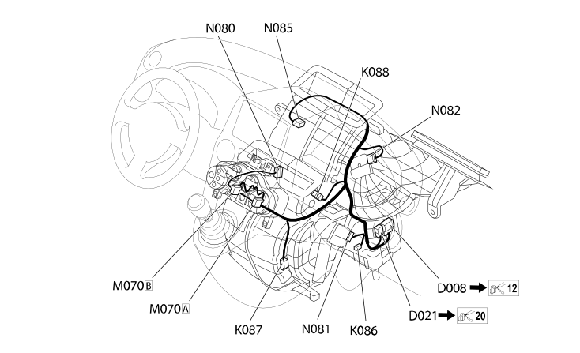

65 AIR CONDITIONING
- Path
- Electrical equipment > 2 WIRING > 65 AIR CONDITIONING
- Kind
- wiring harness
- Applies to
- all engines; all production periods; only with equipment: Automatic Air Conditioning
- Interactive page
- https://sloeber94.github.io/elrnDB-fPnd/en/#/2751691
Applies to: all engines; all production periods; only with equipment: Automatic Air Conditioning

Topics that link to this page (19)
- D008 AIR CONDITIONING-HEATER FRONT COUPLING (AIR CONDITIONING)
- D008 AIR CONDITIONING-HEATER FRONT COUPLING (AIR CONDITIONING)
- D021 DASHBOARD/AIR CONDITIONING-HEATER COUPLING (AIR CONDITIONING)
- G045A AIR CONDITIONING/HEATER CONTROLS LIGHT (AIR CONDITIONING)
- G045B AIR CONDITIONING/HEATER CONTROLS LIGHT (AIR CONDITIONING)
- H080A AIR CONDITIONING CONTROLS (AIR CONDITIONING)
- H080B AIR CONDITIONING CONTROLS (AIR CONDITIONING)
- K086 FROST SENSOR (AIR CONDITIONING)
- K087 LOWER MIXED AIR TEMPERATURE SENSOR (AIR CONDITIONING)
- K088 UPPER MIXED AIR TEMPERATURE SENSOR (AIR CONDITIONING)
- M070A CLIMATE CONTROL SYSTEM CONTROL UNIT (AIR CONDITIONING)
- M070B CLIMATE CONTROL SYSTEM CONTROL UNIT (AIR CONDITIONING)
- N080 AIR DISTRIBUTION FLAP ACTUATOR (AIR CONDITIONING)
- N081 MIXTURE FLAP ACTUATOR (AIR CONDITIONING)
- N082 OUTSIDE / RECIRCULATION AIR INTAKE FLAP ACTUATOR (AIR CONDITIONING)
- N085 PASSENGER COMPARTMENT AIR FAN (AIR CONDITIONING)
- N085 PASSENGER COMPARTMENT AIR FAN (AIR CONDITIONING)
- N086 ELECTRONIC THERMOSTAT (AIR CONDITIONING)
- O030 PASSENGER COMPARTMENT AIR FAN ADJUSTMENT RESISTOR (AIR CONDITIONING)